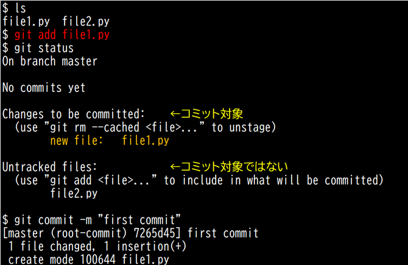

- 問題ID : 22342 makeによるソースコードからのビルドとインストール
- 履歴
正解
git add
解説
主なgitコマンドは下記のとおりです。
上表より正解は
・git add
です。
書式：
git add ファイルまたはディレクトリ
git
addコマンドは指定したファイルをインデックス（ステージングエリア）に追加してGitのバージョン管理対象とします。インデックスに追加されたファイ
ルはgit commitコマンドでコミット（変更履歴をローカルリポジトリに記録する）できるようになります。
例）ファイル「file1.py」をインデックスに追加してコミットする

その他の選択肢については上表をご確認ください。
なお、git indexというコマンドは存在しません。
参考
【バージョン管理システム】
オー
プンソースコミュニティ（OSSの共同開発や情報交換を行う人々の集まり）では多数のメンバーがソースコードを変更、共有して開発を行います。そのため、
いつ、誰が、何を変更したかという情報を管理するバージョン管理が必要になります。バージョン管理システムでは、ソースコードや変更履歴をリポジトリと呼
ばれるデータベース（格納場所）で管理し、以前のバージョンを参照したり復元したりできます。
バージョン管理システムには、
・集中型（単一の中央リポジトリでプロジェクトを管理する）：CVS、Subversion など
・分散型（プロジェクトのリポジトリを各自が分散保有できる）：Git（ギット）、Mercurial（マーキュリアル）など
があります。
ここではGitについて説明します。
【Git】
Git（ギット）は分散型バージョン管理システムです。Linuxカーネルのソースコードを管理するために、Linuxカーネルの開発者リーナス・トーバルズによって開発されました。現在多くのプロジェクトでのバージョン管理に利用されています。
Gitの特徴は、利用ユーザのローカルにリポジトリの完全なコピーを保有できるという点です。そのためネットワークに接続できない場合も、ファイルの編集や変更履歴の確認が行えます。
GitをWebサービスとして提供しているホスティングサービスにはGitHub、GitLab、Bitbucketなどがあります。これらのサービスを利用してWeb上でバージョン管理やレビューを行うのが主流となっています。
以下はGitを利用するイメージです。
・リモートリポジトリ
ソースコードや変更履歴が置いてあり、プロジェクトの開発者全員がアクセスできるリポジトリです。リポジトリ用のサーバを立てるか、GitHubのようなホスティングサービスを利用します。
・ローカルリポジトリ
利用ユーザごとにローカルに専用のリポジトリを保有します。リモートリポジトリから最新のソースコードを入手し（clone, pull）、ローカルで機能の追加や改修を進められます。動作確認できたらリモートリポジトリに反映します（push）。
・ワークツリー
ファイルの編集を行う作業ディレクトリです。ワーキングツリーとも呼ばれます。
・ステージングエリア
変
更したファイルをこのエリアに追加（add）してコミット（commit、変更履歴をローカルリポジトリに記録する）の対象とします。インデックスとも呼
ばれます。リポジトリに反映する前にステージングエリアを介することによって、1回のコミットで記録するファイルを選択することができます。
・タグ
リポジトリに記録された変更履歴であるコミットに、別名としてタグを付けることができます。例えば、ある時点のコミットにバージョン番号のタグを付けることで、特定の変更履歴を判別しやすくなります。
・ブランチ
開
発の本流（mainブランチ）から分岐して、本流に変更を加えずに個別に開発作業を行える機能です。ブランチはある時点のコミットを差すセーブポイントの
ようなもので、作業途中でいくつかのブランチを作成しておくことで任意のバージョンに戻せるようになります。また、ブランチの機能が安定してきたら
mainブランチに統合（merge）することもできます。
Git
にはプルリクエスト（pull
requests）という機能があります。コードを改修してリモートリポジトリに反映（push）したブランチの内容を他の開発者に取り込んで
（pull）レビューしてもらい、フィードバックをもらったり、問題無ければベースのブランチに統合（merge）してもらうリクエストです。
【gitコマンド】
gitコマンドはGitを操作するためのコマンドです。
主なgitコマンドは下記のとおりです。